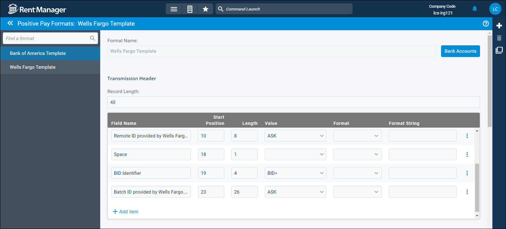

Source: https://rmxhelp.rentmanager.com/Topics/Express/CSH/Positive-Pay-Formats.htm
Positive Pay Formats (Page)
Positive pay formats allow Rent Manager and your bank to establish a communication system where information about checks you write is shared with the bank before they are cashed. When the checks are cashed, the bank can compare the presented checks against the information you sent them to ensure that the checks have not been altered. This fraud-deterrence system sends the specifics of each check you write to the associated bank, provided your bank uses positive pay formats.
To use positive pay formats, create a template that meets the bank's requirements so that they can identify which checks should be cashed. These requirements must be provided by your bank. Once a template is created, you can assign it to one or more bank accounts. After you send the file to the bank (following their instructions), the bank honors only the checks whose information is in the file.
Related Privileges
| Group | Privilege | Column |
|---|---|---|
| Banks/Checks | Create Positive Pay Exports | Enabled |
For more information, refer to Control User Access.
To view your positive pay formats, go to  arrow_forward Payables arrow_forward
arrow_forward Payables arrow_forward  Payables Setup arrow_forward Positive Pay Formats. Positive pay format templates display in a list on the left, and the selected template information displays on the right.
Payables Setup arrow_forward Positive Pay Formats. Positive pay format templates display in a list on the left, and the selected template information displays on the right.

At the top of the page, you can make selections in the following options:
| Option | Description |
|---|---|
|
Format Name |
The name of the template that displays when selecting it for positive pay. |
|
Bank Accounts |
The bank account(s) for which this positive pay format is used. Related Privileges This field populates with only banks to which you have access. Your access to banks can be managed on the user's details page. For more information, refer to Limit Access to a Bank or Credit Card. |
Section Descriptions
Each positive pay template must be set up to match the structure of the bank's required records and the specific order of information (fields, field start position and length, value, format, and total length of record) to ensure the bank can verify your checks.
The template formatting details are divided into four sections (Transmission Header, File Header, Detail, and Trailer), each with the following columns:
| Column | Description |
|---|---|
|
Record Length |
The total number of characters that can be included in the section. This value should be equal to or larger than the sum of the Length column values for the section. |
|
Field Name |
A descriptive name for this field. |
|
Start Position |
The starting character position for this field. |
|
Length |
The length of this field. Typically, this is the maximum number of characters that are returned for this field. Displayed values that have fewer characters than the specified length may be zero filled or blank filled depending on the Format selected. |
|
Value |
Returns the value associated with the selected option. For example, Bank Name returns the name of the bank associated with the check. The ASK scripting function is also available. ASK allows you to ask a question and prompt the user for input during exporting. |
|
Format |
The desired formatting to be applied to the returned value. If a format is not selected, the value is left-justified by default. |
|
Format String |
A value to apply to the returned value and then the Format. For example, if you want Check Amount and Sum of Check Amounts to have two-place decimals and be filled with zeroes, you can enter #####0.00 in Format String and then select Zero Filled for the Format. If left empty, the Value retains its functionality. For example, Check Amount and Sum of Check Amounts will not have decimals. |